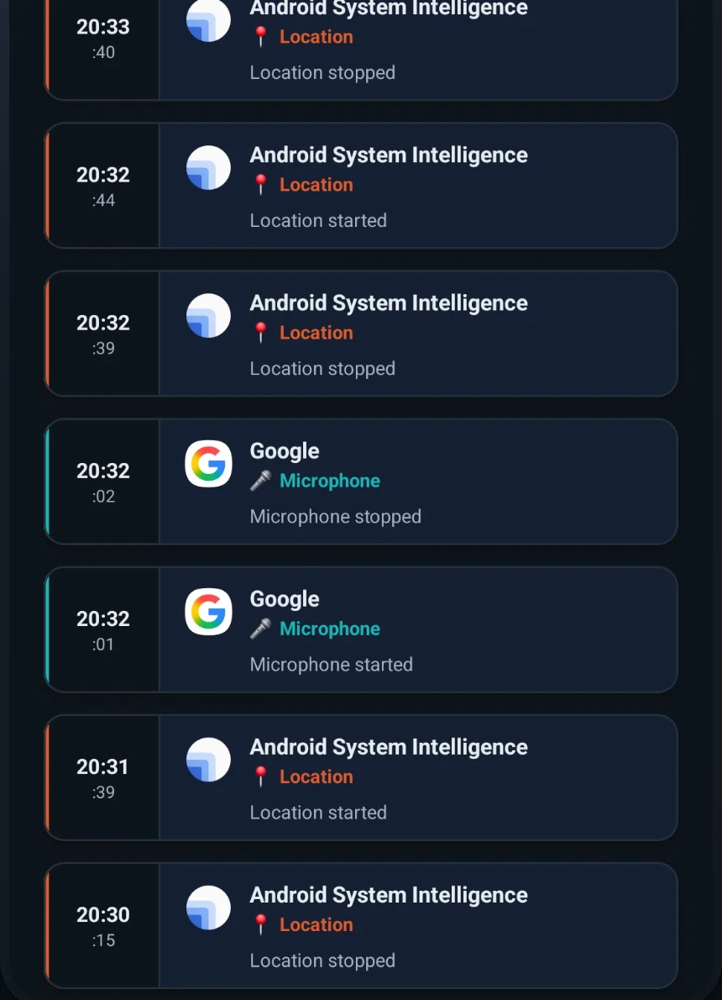
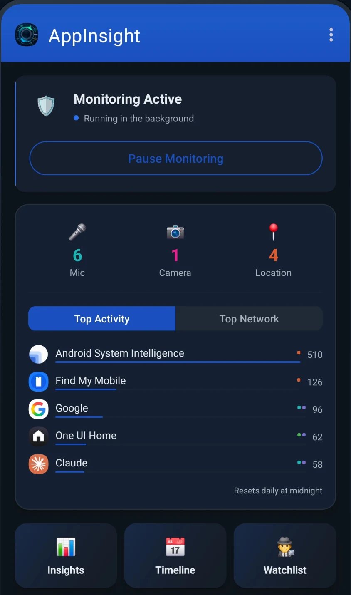
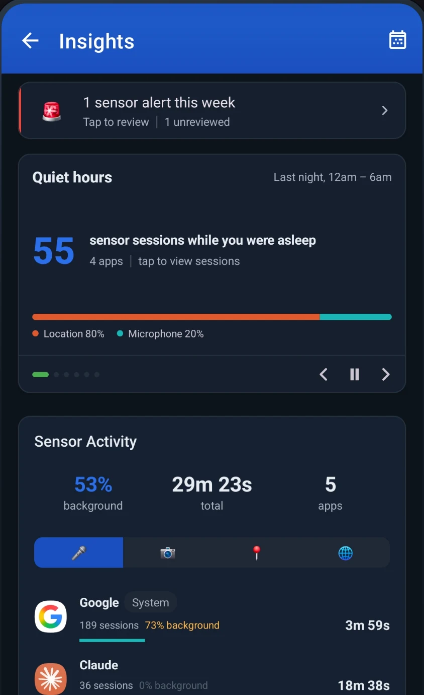

AppInsight keeps a timestamped record of every microphone, camera, and location access on your phone. Which app, when, and for how long, read straight from what Android reports.


Open the app and the day so far is right there. Monitoring status, today's count for each sensor, and which apps have been busiest. Resets at midnight.
Install it and it starts working. Android reports the sensor access, AppInsight records it. Hook up Shizuku or root and it goes further, naming the exact app behind every event.
The timeline is the raw record. Insights rolls it up: overnight sensor sessions counted per app, background versus foreground use, and weekly heatmaps of when each sensor fires.

AppInsight records that an app used your location. It deliberately never stores where you were. No coordinates, no audio, no images, ever.
No. Android already lets you grant and revoke permissions. AppInsight shows you what apps actually did with the permissions they hold, which is the part Android buries.
No. It works out of the box. Shizuku (no root required) or root unlocks exact app naming on every event, and is recommended for the full experience.
An open source tool that lets apps use system-level reporting through a one-time wireless debugging setup. No root, no computer needed after setup. AppInsight guides you through it.
Don't trust it, check it. The app requests no internet permission, so the operating system itself blocks it from transmitting anything.